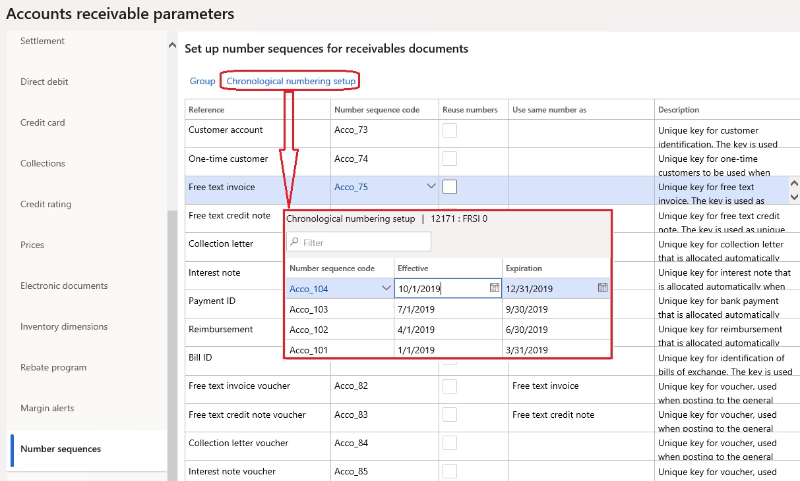

Chronological invoice and voucher numbers
This topic explains how to set up and use chronological numbers for invoices and vouchers in Accounts receivable.
In some countries, there is a legal requirement that all invoices and related vouchers that are issued be numbered in chronological order. The chronology must be supported by fiscal periods. All the numbers that belong to earlier periods must be less than the numbers that belong to later periods. Within one fiscal period, chronological order isn't mandatory, but there must be no gaps in the numbering. To meet this requirement, chronological numbering in Accounts receivable affects the following documents:
- Free text invoice
- Free text invoice voucher
- Free text credit note
- Free text credit note voucher
- Sales invoice
- Sales invoice voucher
- Sales credit note
- Sales credit note voucher
Prerequisites
| Category | Prerequisite |
|---|---|
| Feature activation | In the Feature management workspace, turn on the Chronological numbering feature. For more information, see Feature management overview. |
| Country/region | If the primary address of the legal entity is in France, set the Chronological numbering option to Yes on the Accounts receivable parameters page, on the Updates tab. |
| Related setup tasks | On the Number sequences page, define as many number sequences as you require to cover the affected fiscal periods. You should specify a company for each number sequence. The segments of the number sequences must be defined so that they provide chronological order for periods. For example, the segment names can contain a special prefix that identifies a specific period. |
Set up chronological numbering
Accounts receivable parameters
On the Accounts receivable parameters page, on the Number sequences tab, select one of the supported references, such as Free text invoice. Then click the Chronological numbering setup button that will be available for the supported references. On the Chronological numbering setup page, define the date-effective number sequences that have valid periods.

Number sequence groups
If different customers use different patterns for numbering, you must set up chronological numbering at the level of the number sequence group. On the Accounts receivable parameters page, on the Number sequences tab, select one of the supported references, and then click Group. On the Number sequence group page, select an existing group, or create a new group. In the Reference section, select one of the supported references, and then click Chronological numbering setup. On the Chronological numbering setup page, define date-effective number sequences that have valid periods.
Invoice posting
When you post an invoice or a credit note, the appropriate number sequence is used to generate a number. This number sequence is selected based on the valid period that contains the invoice date. Customer-specific chronological numbering has higher priority than chronological numbering.
Dates control
The system performs an additional invoice dates control for customer invoices:
- Posting new invoices with dates earlier than the date of the latest posted invoice is forbidden if no reason code is defined. To enable posting, a reason code must be entered either in an invoice/order header or in one of the lines.
- A warning is raised if the new invoice date is later than the system date.